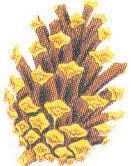
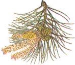
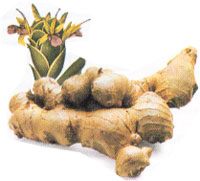

Country Lore: Seeds In The Snow
Susan Dawson uses dip container lids to cover baby formula cans; Sheila Carpenter uses candle stubs as adhesive; Rachel Hartman uses a trash bag as coveralls during a messy project; N.W. Smeathers shares several uses for fennel and pennyroyal; Terry McLendon uses camphor to dissuade insects from coming indoors; Tom Brantley sprinkles baking soda on battery terminals to keep them from corroding; George Lynch hooks his masonry abrasive wheel into his drill to remove stubborn nuts; Dennis Slodysko adds dishwasher detergent to windshield wiper fluid for a cleaner windshield; Mikki Smith stores motor oil in syrup bottles for easy application; Pat Juenemann puts foil over hardware when painting; Douglas Sity inserts a drinking straw into a catsup container for easier draining; Bindy Beck-Meyer uses lemon halves to keep white porcelain sinks spotless; Janet Dawn Wilson rids her doghouse of fleas by building a bonfire nearby and letting it burn overnight; Ash Yeager stores broth in cake pans, lets freeze and cuts into squares for easy use in future meals; Andrew Guskea Jr. cleans wicker with a saturated oxalic acid solution; Orville Bodie makes small holes for controlled pouring of liquids; Thomas Brantley turns homemade peanut butter jars upside down each day so the oil won't form on the surface; Phyllis Perry reminds readers that energy lost must equal energy gained.
By the Mother Earth News editors
December/January 1992
Double-Barreled Bread
Recently, I made up a batch of bread and was trying to find a warm place to let it rise. My husband built one of those Sotz double-barrel stoves, and it occurred to me that the top barrel would be an ideal place to let it rise. To keep the pans up off the barrel, I placed a stacking cooling wire rack on the top. It holds three pans nicely and securely-one leg of the rack rests on each side of the barrel. The rack, which is about four inches above the heating surface, would probably work very well on other stoves as well.
-Judy Tinney
Haileybury, Ontario
Just Don't Light a Match!
The stickiness left on plastic items after the price tags are removed can be difficult to remove. I have found lamp oil is a great solution to this problem. I also use it after a window decal has been scraped off. Soak a corner of a paper towel in the oil and rub gently over the sticky patch. It will roll right off without scratching the plastic.
-Diana Baker
Milan, Tennessee
Beating Pine Pitch
I live in the "Pine Tree State," where pine pitch can be a big annoyance. Here's a way to remove it from your hands. Wipe a little margarine right on the pitch, and then wash with soap and water. You can also easily remove pitch from a pair of jeans by adding 1/2 cup of ammonia to the wash.
-Sandra Watt
Madison, Maine
Cleaning Glass with Ash
During the winter we really enjoy the cozy feeling our wood-burning stove provides. The glass door is especially nice-until we have to clean it. We've tried everything from window sprays to oven cleaners. The best method we have found so far is to take a damp rag and lightly set it in the cold ashes once the fire is dead and the stove is at room temperature. You don't have to exert much pressure at all while you're cleaning, and it's free.
-Keith R. Welch
South Weber, Utah
An End to Varnish Jello
I've found an easy way to keep a can of wood stain or varnish from hardening after it's been opened. Because the air inside the can causes the partially used stain or varnish to gel and eventually solidify, the solution is to displace the trapped air with smooth stones. Just drop in the stones as soon as you finish using the stain, until the liquid comes up to the lid of the container again. Replace the lid and you're guaranteed of having ready-to-use stain or varnish next time you need it-no matter how far into the future that might be.
-Graham Wright
Laguna Beach, California
Drop in the Bucket
I was trying to sleep through a torrential rainstorm one night, when my roof sprang a leak. Well, the rhythmic pangs of the drops weren't doing much for my night's sleep until I hit upon an emergency solution. I cut a piece of twine as long as my ceiling was high and thumbtacked one end to the spot where the drops were forming. I placed the other end in the pan and, lo and behold, no more racket! It was only a temporary fix but it got me a good night's sleep.
-Pamela Colberg
Albuquerque, New Mexico
Ginger Tips
Those of us who love to cook with fresh ginger know how hard it can be to use it all before it spoils. I have found that the best way to store ginger is to freeze it in a baggie. I just grate the amount I need and return the remaining root to the freezer. Best of all, ginger also grates very easily when frozen.
Also, here's a tip for great tasting garlic oil: Save a soy sauce bottle (or similar type of bottle), clean and dry it, and then place two cloves of crushed garlic in the bottom of the bottle. Cover with oil, shake well, and wait a few days. It gives your garlic a nice, mild taste, it's convenient to use, and it's perfect for stir fry.
-Julie Ray
Decaturville, Tennessee
Not Just a Handy Utensil
Last year I planted a bunch of flower and vegetable seed. By the time I got back to them, they were about two inches tall. So were the grass and weeds. I tried to pull the intruders out but-much to my dismay-many of the roots remained in the ground, and were left to grow and spread. This left little or no room for my plants. So I trotted off to our trash pile, rummaged for a bit, and found the perfect gardening implement: a table fork. I went back to the garden, slid the heavy steel fork right under the roots, and pulled them right out.
-Mrs. C. Pruitt
Elkland, Missouri
 Fresh ginger: Flower, left; and root,below |
 |
 |
|
 |
|
|